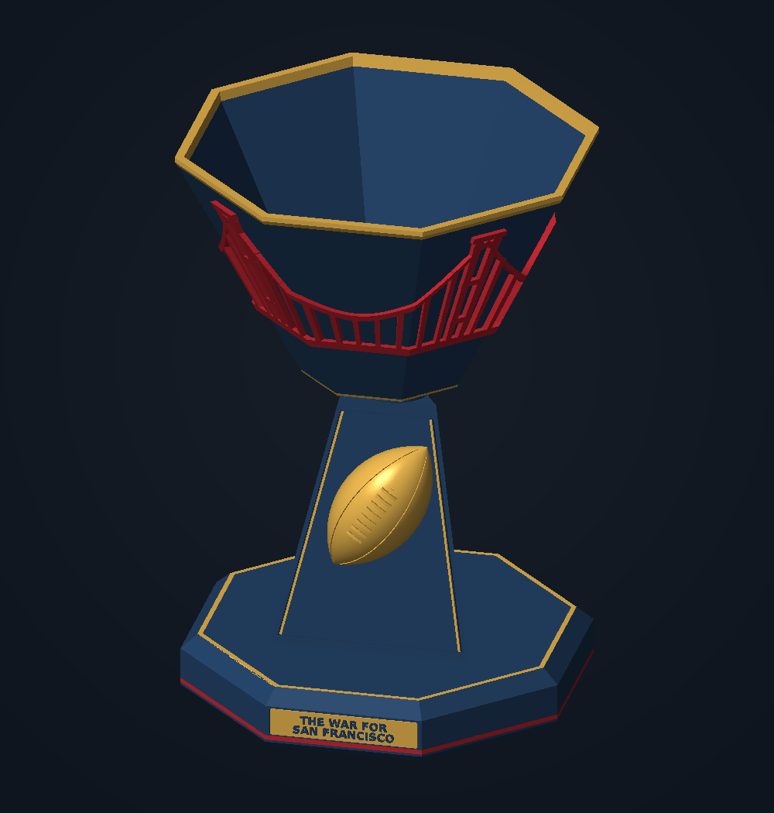

Test the key.
Print the small fit coupon before committing to the trophy. Test the 0.15, 0.25 and 0.35 mm clearances, left to right.
THE TROPHY WORKSHOP / 4A-2
Seven inches tall. A sculpted gold football. Four champions in place.

THE FOUR CHAMPIONS, INSTALLED
These are actual raised-letter 3D tags attached to the assembled model. Use “Champion tags” to inspect them. Four additional slots are reserved.
BAMBU A1 + AMS LITE
Bambu Studio estimates: 0.4 mm nozzle, 0.20 mm layers, 3 walls, 12% gyroid, Generic PLA and Generic PLA Silk. Color-change counts exclude initial loading. Material totals don't guarantee full startup and purge accounting. Re-slice with your actual filament profiles.
ORDER MATTERS
Print the small fit coupon before committing to the trophy. Test the 0.15, 0.25 and 0.35 mm clearances, left to right.
Remove the cup's underside supports. Feed the bridge sleeve over the cup's narrow bottom. Align the front span and add small glue dots.
The rectangular key sets its orientation. Dry-fit, then glue the cup to the pedestal. Don't force silk PLA into a tight fit.
Glue the football panel into its recess. Thin adhesive holds the title and four winner tags. Leave the other four slots empty.
BEFORE THE FULL PRINT
Display trophy only. Not intended for drinking, food contact, or hot liquids. No Easter eggs.
MODEL FILES
The assembled 3D model includes all four historical tags in their mounting pockets. The website uses the same solid geometry as the exported print models. All nine physical pieces passed connected-solid and watertight-mesh checks.
Download prototype files ↗Downloads work in the standalone website. The inline preview may block downloads.